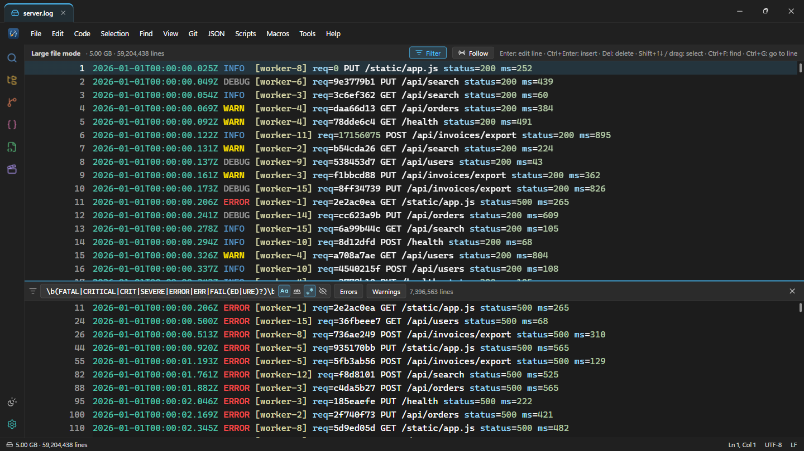
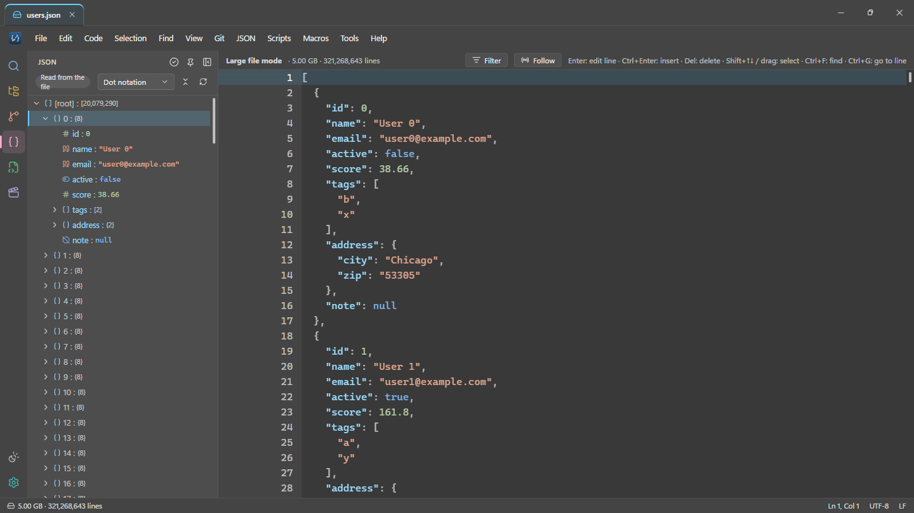
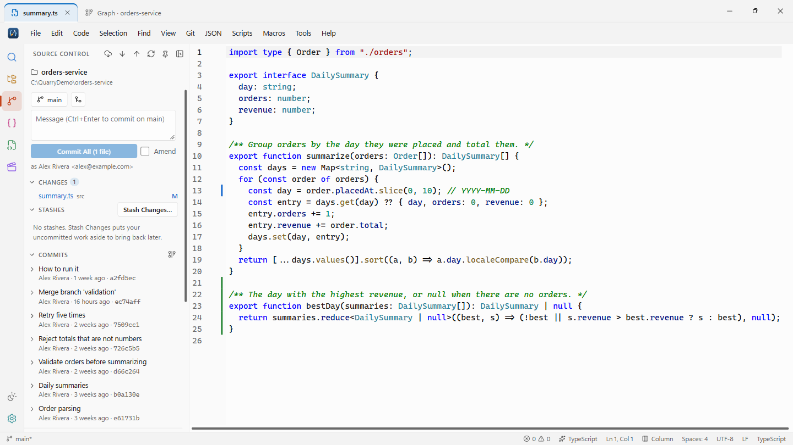

A fast Windows editor for code and huge files
Quarry opens multi-gigabyte logs, JSON and CSV in about half a second, and keeps colours, a JSON tree, a log filter and a CSV grid working on files that large.
Free for individuals. Windows 11, 64-bit. No administrator rights needed.

- 0.6 sto open a 5 GB log, JSON or CSV file
- 0.4 sto find a string in 59 million lines
- 0.5 GBmemory with a 5 GB file open
- 7 MBinstaller, no administrator rights
Why Quarry
Shows a file of any size in about half a second, and is a modern Windows editor with Git, a terminal, compare and code intelligence built in for everything else.
Huge files, in half a second
Files of 128 MB and up open in large-file mode, which never loads the file into memory. Showing it reads only the lines on screen, so a 5 GB file opens as fast as a 1 GB one and stays quick to search, filter and edit. Smaller files open as normal tabs with every editing feature. Those are loaded into memory, but the first lines of a 100 MB file are on screen just as fast, about a second before the rest of it has arrived.
| What | Time |
|---|---|
| Open a 5 GB log, JSON or CSV file | 0.6 s |
| Find a string in 59 million lines | 0.4 s |
| Keep only the 7.4 million ERROR lines | 0.4 s |
| Jump to any line | under 1 ms |
| Expand a record in the JSON tree | 4 ms |
| Validate all 5 GB of JSON | 6 to 8 s |
| Replace All across the file | 2 to 3 s |
How these were measured
Find and the filter do not wait for the line index. The times in the table are for a file that has been open a couple of seconds; started the moment a 5 GB file opens, while its index is still being built, the first search or filter takes 0.8 to 1.5 s. Replace All and other edits start once the index is built, about 1 s after a 5 GB file opens. Validation takes 7 to 8 s the first time and about 6 s after that. Replace All writes a working copy of the file, so it depends on the disk: 2 to 3 s when Windows can buffer the writes, 10 to 35 s on a drive busy with other writes. Memory with a 5 GB file open: about 0.5 GB, up to 0.7 GB in the first seconds. Measured in November 2026 on one PC (Core Ultra 7 265KF, 32 GB RAM, NVMe SSD). Every number and the method are in the full results.
Big files stay useful
At 5 GB you still get colours for JSON, logs, CSV, XML, SQL, YAML and source code, a JSON tree, validation, a CSV grid, regex search and line editing with undo. Large-file mode leaves out multi-cursor, column mode, formatting, compare, code intelligence and scripts: see what is not available.
Logs in seconds
Keep only the ERROR lines of a 5 GB log in 0.4 s, or hide the noise instead. Follow mode shows new lines as they are written, like tail -f.
JSON without the wait
Browse a 5 GB JSON file as a tree straight away: opening a node reads only that node. Validation of all 5 GB takes 6 to 8 s and gives the exact line and column.
Search that keeps up
Find a string or a regex across 5 GB in about half a second, or about a second if you search the moment the file opens. Replace All streams the file instead of loading it.

Built in, nothing to hunt for
Git, a terminal, file compare and code intelligence are part of Quarry. There are no editor extensions to find, install and keep up to date. Quarry works with the Git already on your PC, and each language's server is a separate program that Quarry offers to install for you.
Git
Change markers and blame in the editor, staging by line, a commit graph, merge and rebase with conflict tools, stash, branches and tags.
Terminal
PowerShell, Command Prompt or Git Bash in a tab, opened in the folder you are working in.
Compare
Two files, a file against its unsaved edits, or against the clipboard, side by side with changed words marked and arrows to copy a change across.
Code intelligence
Suggestions, hover documentation, Go to Definition, Find References, Rename and live problems for eight languages, from standard language servers. A missing server installs with one click.
Find in Files
Search a file, your open tabs or whole folders; folder search runs on ripgrep's engine. The last Replace in Files can be undone, even after a restart, and each file keeps its encoding.
Editing tools
Column mode, multi-cursor, line tools, colours for about 140 languages, Format Document, JSON tools, macros and JavaScript scripts.

Made for Windows 11
A modern look
Windows 11 styling with light, grey and dark themes, tabs in the title bar, and side panels you pin or let float. High Contrast and full keyboard access are supported.
Easy from the first minute
A command palette finds every action, and any shortcut can be changed in Settings. Close Quarry without saving: your tabs come back when you reopen it, with untitled notes and unsaved changes to files as you left them.
Updates that ask first
Quarry tells you when a new version is ready and installs it when you say so. The check can be turned off.
Private by design
No account, no telemetry, no ads. Nothing about you or your files is sent to the developer. Privacy policy.
Install
- Click Download for Windows above. The file is
Quarry_<version>_x64-setup.exe, about 7 MB. - Run it. Quarry installs for your Windows account only and does not change your default apps.
- Start Quarry from the Start menu, or right-click a file in File Explorer and choose Open with Quarry (under Show more options).
Releases are signed by Stephen Shirey. Windows SmartScreen can still warn about a new release: check the publisher name, then choose More info › Run anyway.
Quarry updates itself: it checks for a new version when it starts and asks before installing. To remove it, use Settings › Apps › Installed apps. More in the install guide.
Licensing
Individuals
Free
Quarry is free for individuals, including freelancers working on their own, and for an organization with a single user.
Organizations
$50 per user per year
An organization with two or more people using Quarry needs a commercial license for each of them, after a free 30-day evaluation. Billed annually. The full terms are in the license.
Checkout is run by Paddle, our reseller and the merchant of record, which adds sales tax or VAT where it applies and sends the receipt and invoice. Subscriptions renew yearly; cancel at any time. See the terms of sale and the 30-day refund policy.
To buy by invoice, or for 100 or more users, purchase orders or custom terms, write to smspgh@outlook.com.
I'm the only person at my company using Quarry. Do we need a license?
No. An organization with a single user of Quarry is covered by the free license, at no cost.
What happens when a second person starts using it?
The organization can evaluate Quarry free of charge for 30 days from that day. After that it needs a commercial license for each of its users, the first one included, or goes back to a single user. Two users cost $100 a year.
Does Quarry check or report how many people use it?
No. Quarry has no license keys and sends no usage data, so nothing about your use reaches the developer. The organization counts its own users: license the people who use Quarry for its work.
Support
Found a bug or have a question? Open an issue on GitHub. The guides for every feature are in the documentation.